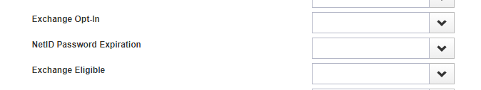

The code that you see in this presentation (and then some!) will be made available to you.
netIdpasswordNextEvent Identity attribute:
firstWarningsecondWarningthirdWarningdeactivatenetIdpasswordExpiration Identity attribute.
Find all NetIDs that have received their third warning and show the date that the password will expire.
Try using Advanced Analytics.
We can't. netIdpasswordNextEvent isn't a searchable attribute, so it doesn't even appear in the list.

Write a custom Rule that iterates through Identity objects and picks the applicable ones. Then, run the Rule as a one-off.
This does actually work! But it comes with some disadvantages:
Use a SQL query to isolate the right identities.
Technically you can do it...
...but it's not pretty.
SELECT NAME, TIMESTAMP '1970-01-01 00:00:00.000 UTC'
+ NUMTODSINTERVAL(
TO_NUMBER(REGEXP_SUBSTR(ATTRIBUTES,
'key="netIdpasswordExpiration"\s+value="(.*?)"',
1, 1, 'i', 1)
) / 1000,
'SECOND'
) AS PWD_EXPIRES
FROM SPT_IDENTITY
WHERE TO_CHAR(REGEXP_SUBSTR(ATTRIBUTES,
'key="netIdpasswordNextEvent"\s+value="(.*?)"',
1, 1, 'i', 1)) = 'thirdWarning';For a more resilient solution, you could parse the XML:
SELECT NAME, TIMESTAMP '1970-01-01 00:00:00.000 UTC'
+ NUMTODSINTERVAL(
TO_NUMBER(
EXTRACTVALUE(XMLTYPE(ATTRIBUTES),
'//entry[@key="netIdpasswordExpiration"]/@value'
)
) / 1000,
'SECOND'
) AS PWD_EXPIRES
FROM SPT_IDENTITY
WHERE EXTRACTVALUE(XMLTYPE(ATTRIBUTES),
'//entry[@key="netIdpasswordNextEvent"]/@value'
) = 'thirdWarning';
Any SQL solution also suffers from the same issues of not being able to easily export data or schedule the report.